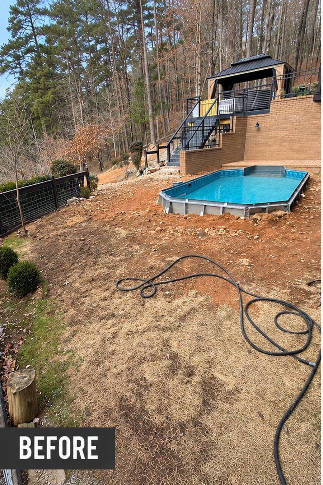
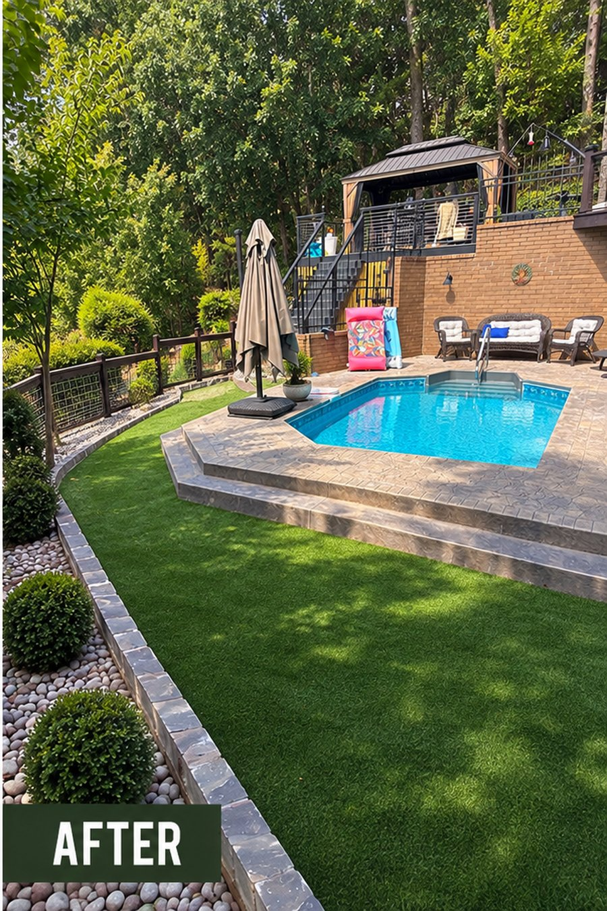

Design · Build · Maintain · Grow
See what we can do
Same house. Same footprint. An entirely new outdoor space — designed and built by one team.


An above-ground pool on a dirt hillside became an in-ground-look pool with a stamped-concrete deck, a lush turf lawn, sculpted boxwoods and stone borders.


Grade shaped, runoff solved, and a finished landscape of lawn, stone edging and flagstone paths.


A natural-stone dry creek that handles the water and looks intentional year-round.


From worn and bare to a lush, finished landscape a family is proud to come home to.
Who we are
We Care Landscapes has been family-owned and operated in Central Arkansas since 1998. What started as lawn care has grown into a full landscape company — design and build, our own sod farm, and dependable property care — but the way we work hasn't changed.
We don't arrive with a package to sell. We start with how you want to live on your property, study what's actually going on with it, and build the right solution — by hand, with one owner-led crew, start to finish. Real craftsmanship, honest communication, and work we're proud to put our name on. That's the difference, and it's why our customers stay with us for years.
What neighbors say
"I received Derrick's name as someone who could prune my Japanese Maple. All I can say is WOW!!! These guys did fantastic, restoring the tree back to its former glory — I'd give 100 stars if I could. I wish I'd known about Derrick years ago. Fantastic work at a fair price. I highly recommend!"
"Very professional and reasonable. Good folks."
Let's get started
Tell us what you're picturing and we'll help you find the right path — usually the same day.